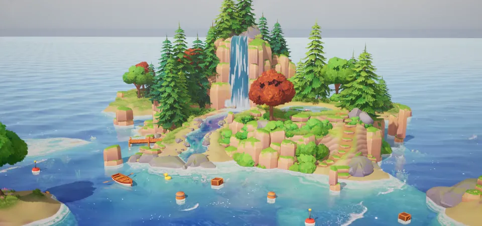
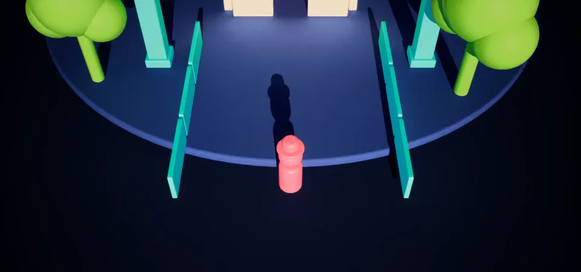
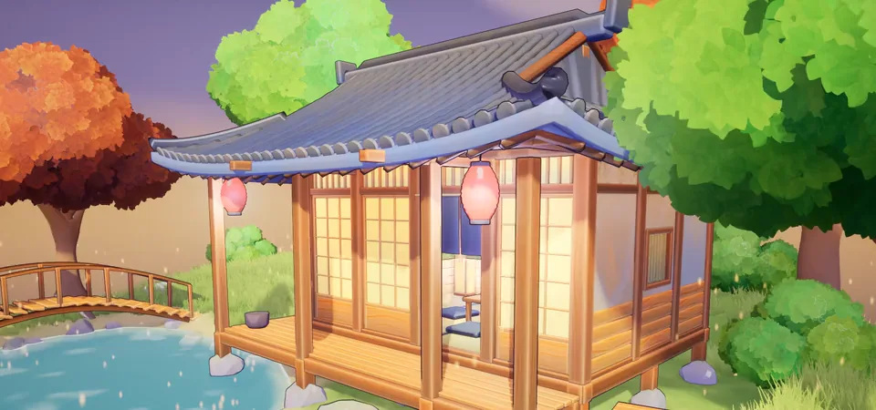
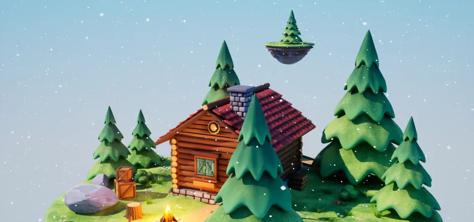
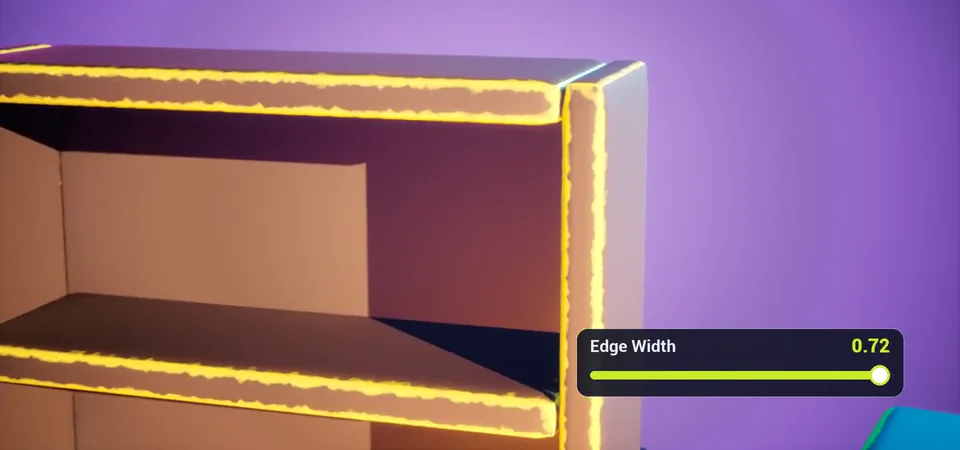
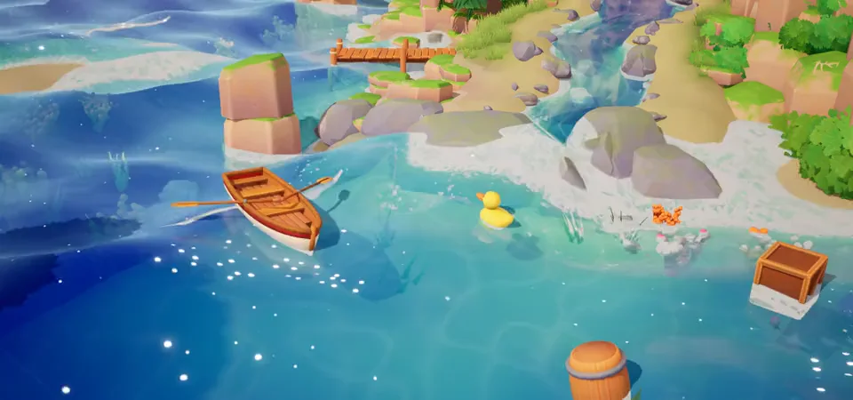

Unreal Engine 5 material guides
How stylized effects are built in Unreal Engine 5, written from the materials I make and sell: the idea behind each effect, the steps, the settings that matter and what each one costs. Every guide ends with the shortcut, including two free packs.

How stylized water works in UE5: depth colour, shore foam, waves and sun glints. Build the layers yourself or drop a plane and drag a preset.

Three ways to see your character through walls in UE5: a cut-out in the wall material, a Custom Depth silhouette, or hiding actors. Steps and costs.

Toon Studio Lite is a free toon and cel shader for Unreal Engine 5.8: one actor, three looks, no material changes. Install steps, settings and limits.
Unreal Engine 5.8 has a built-in Substrate toon shader. How it differs from a post-process toon shader, what each one does, and when to use which.

How to add snow or moss on top of any mesh in Unreal Engine 5: a world-space up mask, why the simple version looks flat, and a drop-in function.
Make snow build up and melt while you play in UE5: one global value in a Material Parameter Collection, a weather actor and melt zones around a fire.

Edge wear in Unreal Engine 5 with no curvature map, no UVs and no baking: the median-of-the-normal trick, mesh rules, and a free Material Function.
How a post-process cel shader works in Unreal Engine 5: G-Buffer, toon bands that follow the sun, stencil control, runtime looks, cost and limits.

Make boats, crates and barrels float on a custom water material in UE5 without physics: sample the same wave as the shader. Steps and tuning.
Draw a stylized river and a waterfall in Unreal Engine 5 with splines: add points, set width and segment length, keep the flow continuous.
Two free Unreal Engine 5 packs on Fab by RafaSC: Painted Edges (edge shader, no UVs or textures) and Toon Studio Lite (toon shader, 3 looks).